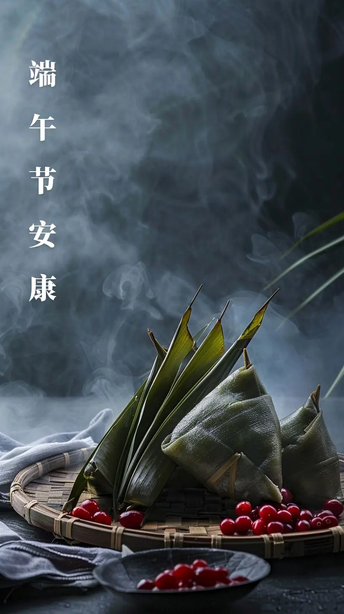
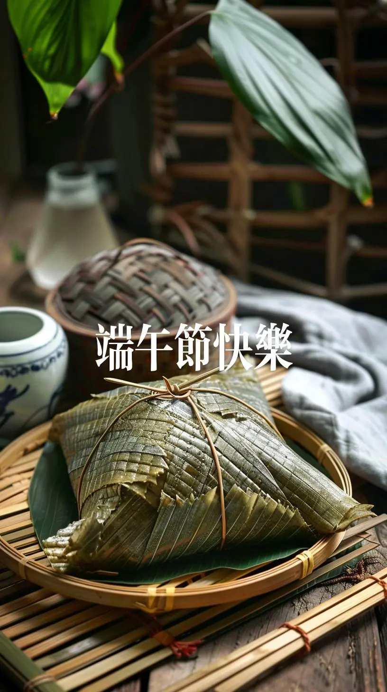

欢迎来到徐天天的端午节介绍

端午节吃粽子的习俗主要与纪念屈原有关。
屈原是战国时期楚国的一位爱国诗人和政治家，他忠诚爱国，却遭受了谗言陷害，被楚怀王流放。
在流放期间，他仍然心系楚国，写下了许多著名的诗篇。
最终，楚国被秦国所灭，屈原悲愤交加，投江自尽。
楚国的百姓为了纪念屈原，纷纷划船打捞他的遗体，并向江中投放米粮，以免鱼虾啃食他的身体。
后来，这一习俗逐渐演变成了端午节吃粽子和赛龙舟的传统。
粽子的制作原料主要是糯米和粽叶，人们会将糯米包裹在粽叶中，制成各种形状和口味的粽子。
吃粽子不仅是为了纪念屈原，也寓意着团圆、吉祥和幸福。
此外，也有说法认为粽子的起源与祭祀的牛角有关，或是一种祭龙之物。但无论哪种说法，粽子都承载着丰富的文化内涵和历史意义，是中华民族传统文化的重要组成部分。
看完粽子接下来带你们来看看龙舟
